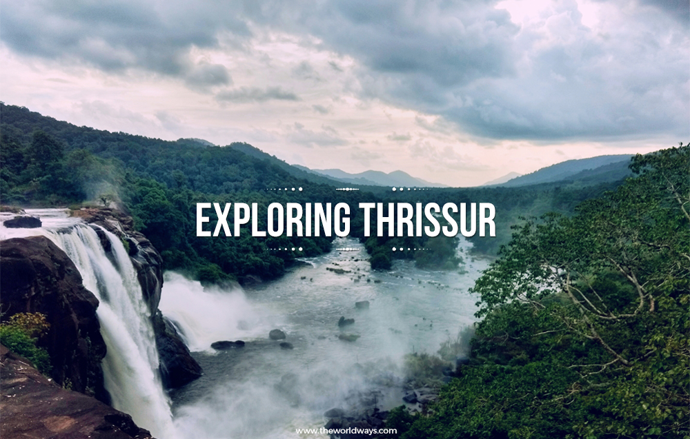
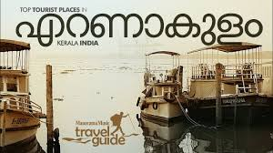

Kasaragod district of Kerala state in India. Established in the year 1966
Kannur
Kannur is a coastal city in the south Indian state of Kerala. It was once an ancient trading port.
Wayanad
Waynad famous for wildlife,Because of it wild green it offers great scenic beauty
Kozhikkod
Kozhikode is a coastal city in the south Indian state of Kerala. It was a significant spice trade center and is close to Kappad Beach
Malappuram
Malappuram has made numerous contributions to the cultural heritage of Kerala
Palakkad
Palakkad, or Palghat, is a city in Kerala, a state in southwestern India.

Thrissur
Thrissur is a city in the south Indian state of Kerala. It's known for sacred sites and colorful festivals. In the center is Vadakkumnathan Temple,

Ernakulam
Sprawling, residential Ernakulam is known for Marine Drive, a busy waterfront promenade where boats offer backwater cruises
Idukki
Idukki district is a densely forested, mountainous region in the south Indian state of Kerala
Kottayam
Kottayam, IPA: is a city in the Indian state of Kerala. Flanked by the Western Ghats on the east and the Vembanad Lake and paddy fields of Kuttanad on the west,
Alappuzha
Alappuzha (or Alleppey) is a city on the Laccadive Sea in the southern Indian state of Kerala. It's best known for houseboat cruises along the rustic Kerala backwaters,
Pathanamthitta
Situated near the Western Ghats and bordered by the hills, Pathanamthitta district is a treat to eyes with its vast unending stretches of forests, rivers and rural landscapes
Kollam
A famous port of international spice trade in ancient India, the present day Kollam is famous for its varied modern industries including cashew nut processing and research, fisheries, etc.
Thirruvananthapuram
Thiruvananthapuram District, is the southernmost district in the Indian state of Kerala. The district was created in 1949, which is also Kerala's capital.